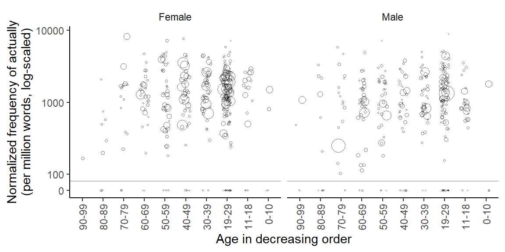

Unbalanced distributions and their consequences: Speakers in the Spoken BNC2014
corpus linguistics
count data
data structure
negative binomial distribution
clustered data
imbalance
This blog post illustrates how the disproportionate representation of speakers in a corpus can lead to distorted results if the source of data points (i.e. the speaker ID) is not taken into account in the analysis.
library(tidyverse) # for data wrangling and visualizationlibrary(dataverse) # for downloading data from TROLLinglibrary(marginaleffects) # to compute model-based estimateslibrary(MASS) # to fit a negative binomial regression modelsource("C:/Users/ba4rh5/Work Folders/My Files/R projects/my_utils_website.R")
Case study: Actually in the Spoken BNC2014
Our illustrative dataset records the distribution of actually in the Spoken BNC2014 (Love et al. 2017), which was analyzed in Sönning and Krug (2022). The question of main interest is whether and how the usage rate of actually in conversational speech varies by Age and Gender.
Data preparation
For more information on the dataset, please refer to Sönning and Krug (2021). We start by downloading the data from TROLLing:
dat <-get_dataframe_by_name(filename ="actually_data_2014.tab",dataset ="10.18710/A3SATC",server ="dataverse.no",.f = read.csv,original =TRUE )
This dataset includes 668 speakers and the following speaker variables:
an ID (speaker)
the number of times they used actually (count)
their age in years, if provided in the metadata (Exact_age)
the age range (Age_range)
self-reported gender (Gender)
the total number of words contributed to the corpus by the speaker (total), and
a slightly aggregated version of age range (age_bins)
str(dat)
'data.frame': 668 obs. of 7 variables:
$ speaker : chr "S0001" "S0002" "S0003" "S0004" ...
$ count : int 6 21 8 1 3 1 6 101 0 7 ...
$ Exact_age: int 32 NA NA NA NA NA NA 66 NA NA ...
$ Age_range: chr "30-39" "19-29" "19-29" "30-39" ...
$ Gender : chr "Female" "Female" "Female" "Male" ...
$ total : int 3000 8535 1893 3634 1449 4804 11276 139888 533 3105 ...
$ age_bins : chr "30-39" "20-29" "20-29" "30-39" ...
In line with Sönning and Krug (2022), we remove speakers who contributed fewer than 100 words to the corpus, and for whom information on age is missing. This leaves us with n = 656 individuals.
d <- dat |>filter(total >100, Age_range !="Unknown")
Then we add a new variable to the data frame: the speaker-specific normalized frequency of actually, expressed as ‘per million words’:
d$rate_pmw <- (d$count / d$total) *1000000
Finally, we reverse the order of the levels of the categorical variable Age_range, so that they are listed in decreasing order. This is because we will interpret differences between age groups (i.e. differences in apparent time) as indicating differences in real time. The new variable is called age_group:
d <- d |>mutate(age_group =factor( Age_range, levels =rev(sort(unique(Age_range))),ordered =TRUE))
We reduce the data frame to the variables we need for analysis:
d <- d |> dplyr::select(speaker, Gender, age_group, count, total, rate_pmw) |> dplyr::rename(gender = Gender)
Let us start by looking at how speakers are distributed across the sociolinguistic categories. The table below shows that the youngest and oldest cohorts are rather sparsely populated.
Next, we consider the distribution of speaker word counts, i.e. the number of words they contributed to the corpus. In the Spoken BNC2014, this count varies markedly across individuals. The following dot diagram shows the skewed distribution: The word count ranges from 117 to 362,107 (after removing speakers with fewer than 100 words) and 81% of the speakers contribute fewer than 20,000 words to the corpus.
Draw Figure
d |>ggplot(aes(x = total)) +geom_dotplot(binwidth =1600, stackratio = .9, method ="histodot") +theme_dotplot() +scale_x_continuous(labels = scales::label_comma(), expand =c(.01, .01)) +scale_y_continuous(expand =c(0, 0)) +annotate("text", x =150000, y = .5, label ="Each dot represents a speaker", color ="grey30", size =3.5) +xlab("Number of word tokens contributed to the corpus")
Figure 1: Distribution of word counts across speakers in the Spoken BNC2014 (excluding speakers who contributed fewer than 100 words to the corpus).
What is quite interesting is that this distribution is perfectly symmetric on the log scale.
Draw Figure
d |>ggplot(aes(x = total)) +geom_dotplot(binwidth = .041, method ="histodot") +scale_x_log10(labels = scales::label_comma(), expand =c(.01, .01)) +scale_y_continuous(expand =c(0, 0)) +theme_dotplot() +xlab("Number of words per speaker (log-scaled)")
Figure 2: Log-scaled distribution of word counts across speakers in the Spoken BNC2014 (excluding speakers who contributed fewer than 100 words to the corpus).
Frequency of actually: Data summary
To obtain the corpus frequency of actually, we divide the total number of actually-tokens in the corpus by the corpus size. We multiply this rate by 1,000,000 to obtain a normalized frequency of ‘per million words’:
This is very similar to the (normalized) corpus frequency reported in CQPweb (Hardie 2012):
{fig-align=“center”, width=80%}
Due to the skewed word count distribution across speakers, however, this corpus frequency is potentially problematic. It turns out that the top 20 speakers (in terms of overall word count) together make up 31% of the corpus – their word count adds to around 350,000. The corpus frequency is therefore potentially biased toward the language use of these individuals.
We can consider each socio-demographic subgroup (i.e. age-by-gender combination) as a subcorpus and likewise calculate the (sub-)corpus frequency of actually. This means that we divide the total number of actually-tokens in the subcorpus by its size. We can visualize the resulting set of normalized subcorpus frequencies:
Figure 3: Subcorpus frequency of actually in the socio-demographic subgroups.
Another way of estimating the average rate of actually in each subgroup is to consider the speaker-specific normalized frequencies (i.e. the variable rate_pmw) and average over these. Egbert and Burch (2023, 105) refer to these two types of frequency estimates as corpus frequency and mean text frequency. In the present context, we slightly adapt these labels to subcorpus frequency and mean speaker frequency.
Figure 4: Mean speaker frequency of actually in the socio-demographic subgroups.
The frequency estimates in Figure 3 and Figure 4 differ considerably. Especially for 70-to-79-year-olds, the two methods yield very different usage rates. To understand why this is the case, we need to zoom in on the individual speakers. It helps to draw what is sometimes referred to as a bubble chart, where each data point (here: speaker) appears as a circle, and the size of the circles is proportional to some quantity (here: the speaker-specific word count). The figure below arranges speakers by Gender (female speakers on the left) and by Age, within each panel. The y-axis shows the speaker-specific usage rate of actually, and the size of the circles reflects how many words a person contributed to the corpus. Note that the y-axis is log-scaled. To be able to include normalized frequencies of 0 (for which the logarithm is not defined), we opt for a full scale break that is signaled by the grey horizontal line.
Draw Figure
d |>mutate(rate_pmw_0_start =ifelse(rate_pmw ==0, 60, rate_pmw)) |>ggplot(aes(x = age_group, y = rate_pmw_0_start, size = count)) +geom_jitter(shape =1, alpha = .5, width = .2) +facet_grid(. ~ gender) +scale_y_log10(breaks =c(60, 100, 1000, 10000),label =c(0, 100, 1000, 10000)) +theme_classic_ls() +theme(legend.position ="none",axis.text.x =element_text(angle =90, vjust =0.5, hjust=1)) +scale_size_area() +geom_hline(yintercept =80, col ="grey") +xlab("Age in decreasing order") +ylab("Normalized frequency of actually\n(per million words, log-scaled)")

Figure 5: Log-scaled normalized speaker frequency of actually by Age group and Gender, with symbol size reflecting the total number of words the speaker contributed to the corpus.
We note that the subgroup of female speakers aged 70 to 79 includes an exceptionally large bubble, which represents a speaker with both (i) a disproportionately high rate of actually and (ii) a disproportionately high word count. This speaker exerts considerable influence on the subcorpus frequency, which is upwardly biased as a result. In the subgroup of male speakers aged 70 to 79, the speaker with the largest word count (i.e. the largest circle) uses actually at a relatively low rate, which likewise distorts the subcorpus frequency of this group.
To summarize, corpus frequencies can be quite misleading if the size of the units in the corpus (i.e. texts or speakers) varies appreciably. A simple reassurance check compares the corpus frequency (or subcorpus frequency) with the mean text (or speaker) frequency. If these methods yield different results, we must decide which kind of frequency estimate is more appropriate for the research task at hand. In the current setting, there is no reason why a particular individual should receive greater weight when estimating a population quantity such as the usage rate of actually among 70-to-79-year-old female speakers of British English. In other words, the imbalance of word counts across speakers is a nuisance that must be adjusted for in the summary and analysis of these data.
Frequency of actually: Statistical modeling
Let us also consider how frequency estimates can be obtained using regression modeling. Using a statistical model allows us to construct uncertainty intervals (e.g. 95% CIs) around the subgroup estimates.
The variable we are dealing with is a count variable. This is because it consists of non-negative integers that express the number of events (here: occurrences of actually) in a certain period of observation (here: text time, i.e. the number of running words). We therefore turn to the family of count regression models.
The most basic version of this family is the Poisson model. It turns out that it produces the same frequency estimates as the subcorpus frequencies we reported above. This is because it ignores the fact that each subgroup consists of different speakers, who in turn (may) show different usage rates of actually. More specifically, is assumes that all speakers in a specific subgroup have the same underlying usage rate of actually. The assumed absence of individual variation (or inter-speaker differences) appears implausible on linguistic grounds and for the data at hand, Figure 5 shows that this assumption is indeed not tenable.
For a point of reference, we nevertheless start by fitting a Poisson model to the data. Since the total word count differs across speakers (see Figure 1), a count regression model must include what is referred to as an offset. The idea is the same as when we calculate normalized frequencies. To be able to compare usage rates across speakers in the first place, these must be expressed in relative terms, i.e. divided by the total number of words produced by the speaker.
We can fit a Poisson model using the base R function glm(), where the code chunk offset(log(total)) represents the offset.
m_poi <-glm( count ~1+offset(log(total)) + gender * age_group, data = d, family =poisson())
We skip regression tables and directly proceed to the calculation of model-based estimates. To this end, we use the predictions() function in the very helpful {marginaleffects} package (Arel-Bundock, Greifer, and Heiss 2024). We request estimates (i.e. predictions) for all combinations of Age (age_group) and Gender (gender), which means that we are not averaging over any predictor variables in the model. We specify these conditions (i.e. combinations of Age and Gender) using the datagrid() function. It creates a data frame of all predictor combinations of interest. Note that we must also supply a word count (total) to datagrid(); for model-based predictions, this variable controls the type of rate (or normalized frequency) returned by the predictions() function. We will stick to ‘per million words’ and therefore add total = 1e6 to the datagrid() function. If you fail to specify a value for total, the predictions() function will press ahead and use the in-sample mean of this variable (i.e. 17,283) – clearly, this is not what we want.
Two further arguments in the code box below require some explanation. Count regression models are generalized linear models that do not model the data on the original data scale (as is the case in ordinary linear regression). Instead, a link scale is used, similar to logistic regression models. For count regression models, the counts (or in our case: rates) are modeled on the log scale. For interpretation, however, we prefer the orginial data scale – in our case, normalized frequencies on the per-million-word scale.
The predictions() function therefore includes an argument type, which allows us to specify the scale on which predictions should be returned. Specifying type = 'response' asks for predictions on the data scale (i.e. normalized frequencies). Unfortunately, this will also return uncertainty intervals that are computed using the data-scale standard error. As you can check for yourself, this does not work well in the represent case, as some of the lower CI limits are then negative (which is impossible). We therefore ask for predictions on the model scale (i.e. natural logarithms) using type = 'link' and then backtransform these to the data scale using transform = exp.
We go ahead and graph these estimates. The result is virtually identical to the descriptive Figure 3. The error bars represent 95% CIs, and we note that the Poisson model returns very confident estimates for most subgroups.
Figure 6: Log-scaled usage rate estimates based on a Poisson regression model.
The Poisson model can be extended to account for the structure of the data, and for the fact that the usage rate of actually may very well vary from speaker to speaker, even within the same socio-demographic subgroup. Such extensions are sometimes referred to as Poisson mixture models, which include an extra parameter that captures the amount of observed between-speaker variation. A frequently used Poisson mixture is the negative binomial distribution. For a visual explanation, see this blog post. What matters for the present case study is the fact that this type of model knows about and adequately represents the structure of the data.
We can fit a negative binomial regression model using the function glm.nb() in the {MASS} package (Venables and Ripley 2002):
Figure 7: Log-scaled usage rate estimates based on a negative binomial regression model.
This yields a pattern that is very similar to Figure 4, i.e. which reflects mean speaker frequency (rather than subcorpus frequency). The subgroup estimates also form more regular patterns, rather than zig-zag profiles as in Figure 6. This appears much more plausible from a linguistic perspective. Finally, the statistical uncertaintiy intervals are appropriately wide, especially for the oldest cohorts. As our cross-tabulation above showed, very few speakers are found in these cells, which necessarily leads to imprecise estimates.
Key takeaways
If the word count distribution across the speakers or texts in a corpus varies, the corpus frequency of a structure may be biased toward its occurrence rate in overrepresented units (i.e. texts or speakers).
A simple double-check is to compare the corpus frequency to the mean text (or speaker) frequency.
In count regression modeling, the Poisson model produces corpus frequency estimates, while the negative binomial model yields scores that are similar to mean text frequency estimates.
The negative binomial model also gives more reasonable statistical uncertainty intervals.
References
Arel-Bundock, Vincent, Noah Greifer, and Andrew Heiss. 2024. “How to Interpret Statistical Models Using marginaleffects for R and Python.”Journal of Statistical Software 111 (9): 1–32. https://doi.org/10.18637/jss.v111.i09.
Egbert, Jesse, and Brent Burch. 2023. “Which Words Matter Most? Operationalizing Lexical Prevalence for Rank-Ordered Word Lists.”Applied Linguistics 44 (1): 103–26. https://doi.org/10.1093/applin/amac030.
Hardie, Andrew. 2012. “CQPweb — Combining Power, Flexibility and Usability in a Corpus Analysis Tool.”International Journal of Corpus Linguistics 17 (3): 380–409. https://doi.org/10.1075/ijcl.17.3.04har.
Love, Robbie, Claire Dembry, Andrew Hardie, Vaclav Brezina, and Tony McEnery. 2017. “The Spoken BNC2014: Designing and Building a Spoken Corpus of Everyday Conversations.”International Journal of Corpus Linguistics, 319–44. https://doi.org/10.1075/ijcl.22.3.02lov.
Sönning, Lukas, and Manfred Krug. 2021. “Actually in contemporary British speech: Data from the Spoken BNC corpora.” DataverseNO. https://doi.org/10.18710/A3SATC.
———. 2022. “Comparing Study Designs and down-Sampling Strategies in Corpus Analysis: The Importance of Speaker Metadata in the BNCs of 1994 and 2014.” In Data and Methods in Corpus Linguistics, 127–60. Cambridge University Press. https://doi.org/10.1017/9781108589314.006.
@online{sönning2025,
author = {Sönning, Lukas},
title = {Unbalanced Distributions and Their Consequences: {Speakers}
in the {Spoken} {BNC2014}},
date = {2025-04-29},
url = {https://lsoenning.github.io/posts/2025-04-28_disproportionate_representation_speaker/},
langid = {en}
}
![]()